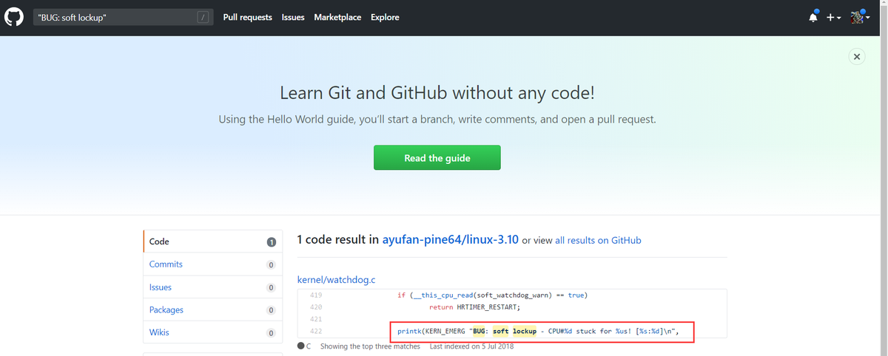
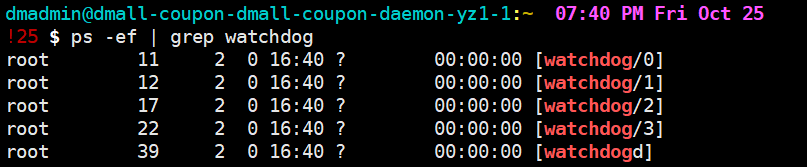
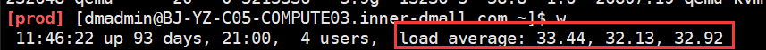

故障分析：
2019/10/25 下午15左右运维收到报警，dvm虚拟机10.29.5.122无法连接，对应业务为dmall-coupon-daemon. 在cmdb查看该vm仍为running状态，运维通过该vm所在的openstack宿主机查看到该vm状态为存活。此时该vm的状态为 能ping通但无法ssh登陆,系统反应缓慢。从监控数据上看到，该vm失联前内存充足，cpu无大波动，心跳戛然而止:

此时运维通过openstack管理界面查看该vm的console输出，有大量kernel log输出如下:
1 | [2783390.079911] NMI watchdog: BUG: soft lockup - CPU#0 stuck for 23s[sh:7422] |
此类日志大量重复，每个重复的日志段不同的地方在于开头部分的进程名, 如:
1 | NMI watchdog: BUG: soft lockup - CPU#0 stuck for 23s [sh:7422] |
除开头部分以外，剩余部分是内核代码函数调用栈，以及各个cpu寄存器此刻保存的值。
报错看上去像是cpu因为某些原因导致了死锁。根据以往经验，kernel问题导致的宕机会被kdump捕捉而生成一个core文件，kdump服务目前线上服务器在初始化的时候会统一开启，被kdump捕获到的core文件保存的是宕机那一刻服务器的完整内存数据，用很多工具可以分析该core文件(如crash https://www.ibm.com/developerworks/cn/linux/l-cn-dumpanalyse/index.html 使用crash能较为完整的还原宕机那一刻的场景) ，但是目前的问题在于，该vm只是假死的状态(尚能ping通)，并未宕机。所以在和业务方确认并重启vm后，vm上并无core文件保留。
此时该如何分析问题？这里提供一个思路，我们知道kernel日志都是linux内核代码打印的(最简单的比如调用c的print()) ，报错中的这类行:
1 | NMI watchdog: BUG: soft lockup - CPU |
有很大概率能在linux代码里找到。那么在哪能找到到Linux代码呢？linux本机自带，不过最方便的方法，是直接在github上查找，当前服务器的内核版本对应的github仓库:https://github.com/ayufan-pine64/linux-3.10，在该仓库内搜索"BUG: soft lockup”:

可以看待该报错出现在watchdog.c文件的第422行，点开该文件能看到报错所在函数的详情。
虽然找到了代码的对应位置，然而linux内核代码阅读难度很高，且各种调用/宏定义错综复杂，涉及到硬件的部分更是要查无数硬件的开发手册，此时又该如何分析？ 根据我的经验，如果是从分析问题的角度去追踪内核函数调用，难度远低于从头硬啃内核代码。第一是因为内核代码的每个函数都有详尽的注释，很多时候不需要看函数的具体实现就能明白函数功能，第二是如果如果对操作系统的一些基本概念有较深刻的理解(中断，任务调度，上下文切换等)，问题排查起来会事半功倍。以下是我的分析过程:
首先报错对应的函数是 watchdog_timer_fn()，这里贴出函数中的关键部分(……为略去部分):
1 | /* watchdog kicker functions */ |
首先要明白2个概念:
- 代码中反复提到的watchdog，watchdog可以简单理解为linux会为每个cpu注册一个watchdog线程，这个线程最重要的功能是会定期执行一些检测函数检测cpu的状态，其中的功能就包括检测cpu死锁，我们可以在linux上看到watchdog线程，比如4核的vm:

2.时钟中断，可以简单理解为linux内核的定时任务的实现方式，二实现计时功能的是一个计时器(物理上的)，计时器溢出时，就向CPU申请中断，如果允许响应中断，CPU就会找到对应的中断响应函数执行(中断服务程序)，计时器重新归零
搞明白这两点后，通过该函数的注释 /* watchdog kicker functions */ 以及函数名 watchdog_timer_fn可以看出，这是一个属于watchdog的时钟中断函数，定时执行，具体多久执行一次可以先不管。
函数第4行首先执行__this_cpu_read(watchdog_touch_ts)，作用是从cpu的cache中取出watchdog_touch_ts变量的值，而这个值是由watchdog线程定期更新(后文会分析)
第8行开始又是一段很重要的注释，注释说明了死锁的检测原理: 通过watchdog让cpu定期去调度一个高优先级的任务，如果该任务在一定时间内得不到调度，则说明了cpu正在被占用。我们知道linux内核是抢占调度，若高优先级的任务长时间无法抢占cpu，则说明cpu出现异常(如抢占被关闭)
15行开始是具体的检测过程，is_softlockup函数以及相关定义如下:
1 | int __read_mostly watchdog_thresh = 10; |
is_softlockup函数首先获得当前时间戳，然后判断传入的watchdog_touch_ts变量加上watchdog_thresh * 2=20(秒)的值是否小于当前时间戳，time_after是一个宏定义如下:
1 | #define time_after(a,b) \ |
所以is_softlockup的逻辑很简单，就是查看watchdog_touch_ts变量在最近20秒的时间内是否被watchdog更新过。若在20秒内未被更新，则返回now - touch_ts(这就是我们再kernel log中看到的具体秒数)
此时回到watchdog_timer_fn时钟中断函数，第16行判断is_softlockup返回值，如果不为 0(watchdog_touch_ts在20秒未被更新，就说明高优先级线程在20秒内得不到调度，此时发生死锁) 进入if条件，22行考虑了宿主机关闭虚拟机导致类似死锁的情况，26行考虑了cpu cache中的soft_watchdog_warn值为true的情况，这两种情况下直接重置时钟，不做处理。最终在29行之后打印了我们最初看到的kernel log和调用栈。
结论:
通过上述分析不难得出结论，某个内核任务正在运行且长时间(20s)未释放cpu或者直接关闭了cpu抢占，内核的检测线程watchdog发现了该情况，并向kernel日志输出”系统正在发生死锁”的信息，此时系统非常缓慢。那么具体是哪个任务在占用cpu不放呢，比较遗憾的是我们当前vm的rsyslog配置中，kernel日志只输出到console而未保存在本地，而console log会在每次vm启动后刷新，无法进行完整分析。另外由于openstack宿主机的cpu有2.5倍的超售设置(腾讯云也一样)，相当于最坏情况下每2.5个vm上的cpu共享一个宿主机物理cpu，那么这个占用cpu不释放的任务，也完全有可能在其他的vm上.
linux代码里只能看到死锁发生的根本原因，官方并没有给出死锁的实际触发场景，查阅相关资料：
vmvare : high levels of overcommitment
redhat : it could because of a very high system load
均说明(软)死锁的触发和系统负载有很大关系，特别是在虚拟环境下。此时我分析了宿主机BJ-YZ-C05-COMPUTE03.inner-dmall.com的负载情况:
cpu使用长期保持在70%以上，系统load长期保持在30以上
vcpu使用量几乎达到极限(每个宿主机会保留2个物理cpu给系统本身，所以可以使用的最大vcpu数为110):
基本可以判定，此次故障是由于宿主机负载过高引起，发生故障的vm上的vcpu 0未能及时抢占到物理cpu而发生死锁(这里推测可能是共享该物理cpu的另一个vm的程序长时间占用或者宿主机用于负载较高未能及时处理调度任务)
解决方案:
可以考虑调整内核kernel.watchdog_thresh的值，比如把20s的检测阈值提高到40s，但这个方法治标不治本。最好的方法，是迁移宿主机上的高负载vm到之后扩容的较为空闲的宿主机上，以降低整体负载，减少软死锁的发生概率。并且修改全局的rsyslog配置，将kernel log在本地保存，方便后续排查问题
补充:
上面的代码分析部分没有详细说明watchdog具体是怎么注册，以及watchdog_touch_ts是如何被更新的，这里给出相关函数和结构体，感兴趣的同学可以自行分析:
1 | static struct smp_hotplug_thread watchdog_threads; |
(建议clone整个linux代码到本地，并使用vim+ctags，可以直接在vim使用ctrl + ]跳转至函数定义，方便查看)
参考:
https://www.kernel.org/doc/Documentation/lockup-watchdogs.txt
https://blog.seibert-media.com/2018/01/04/log-book-linux-cpu-lockups